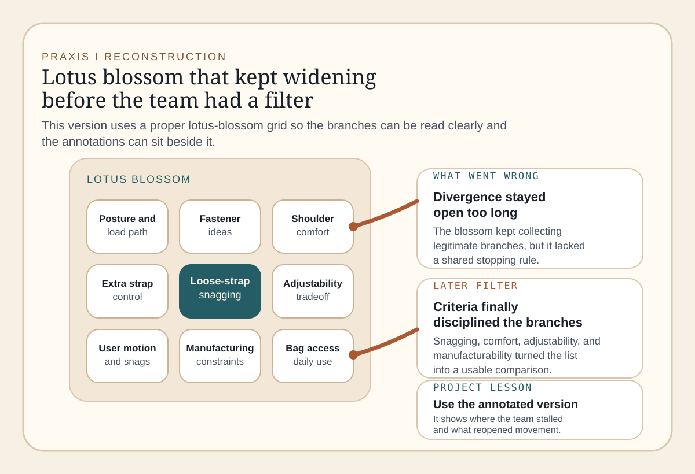
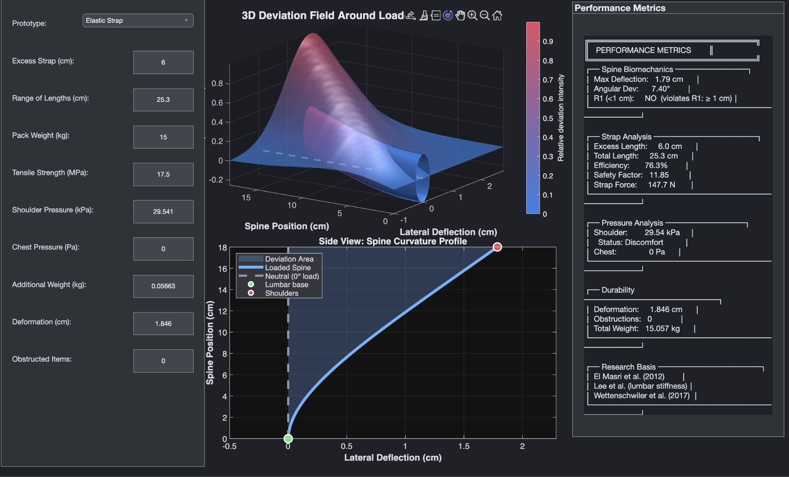
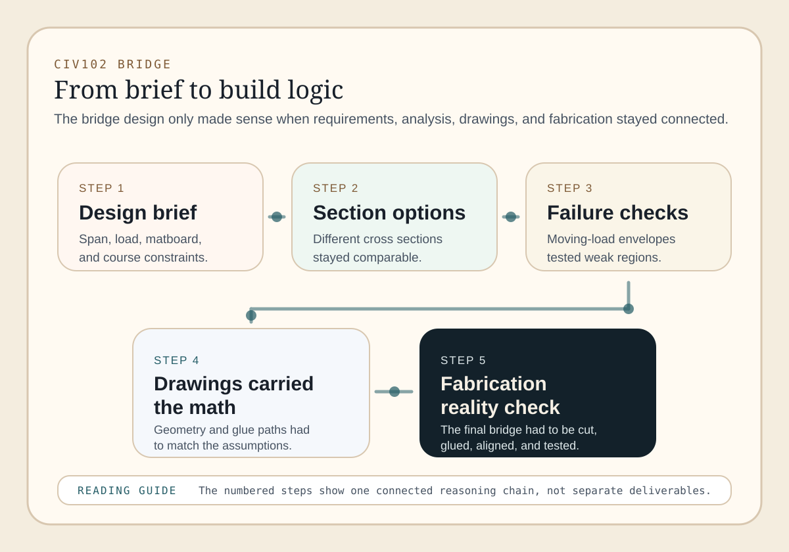
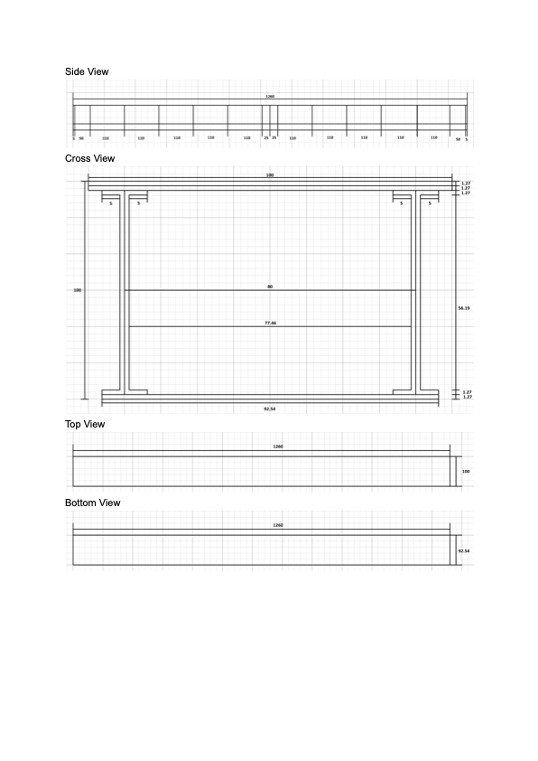
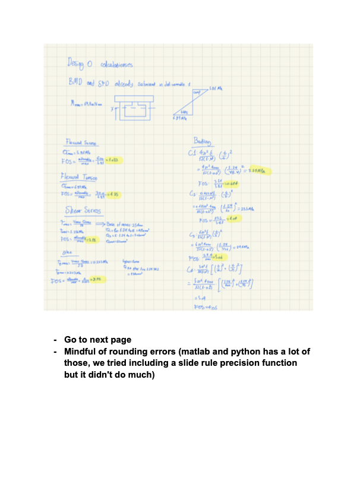
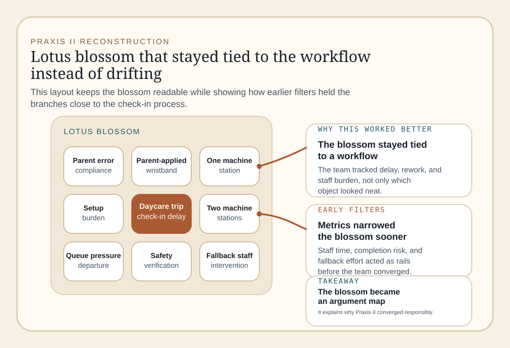
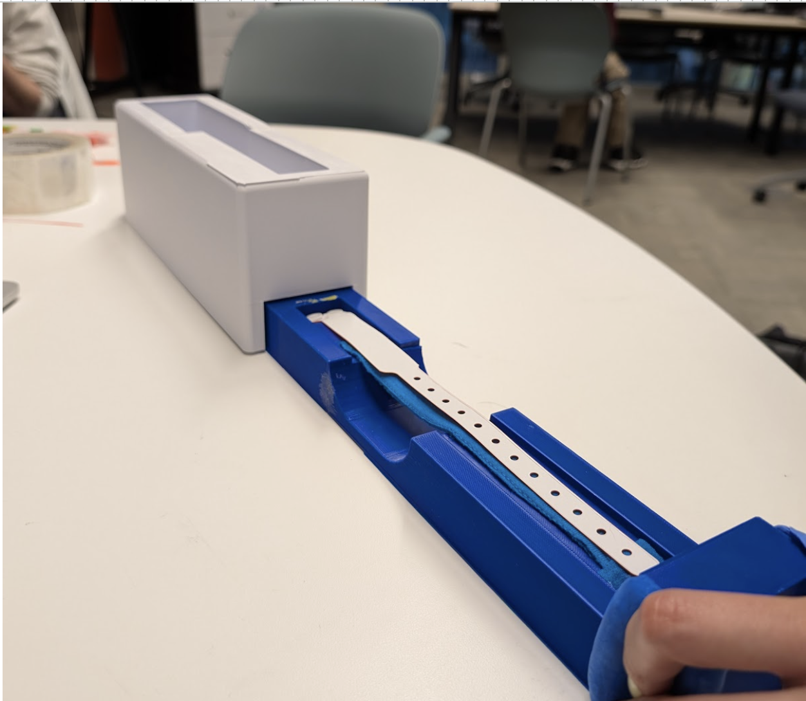
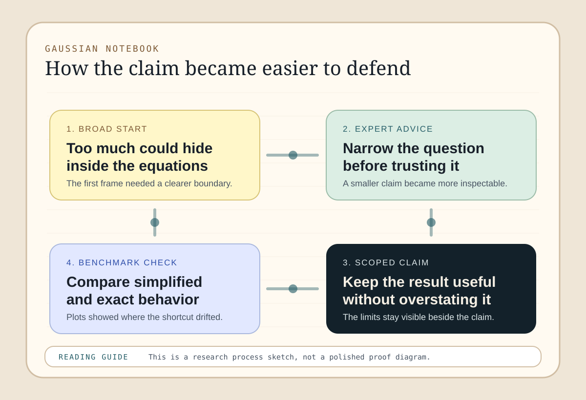
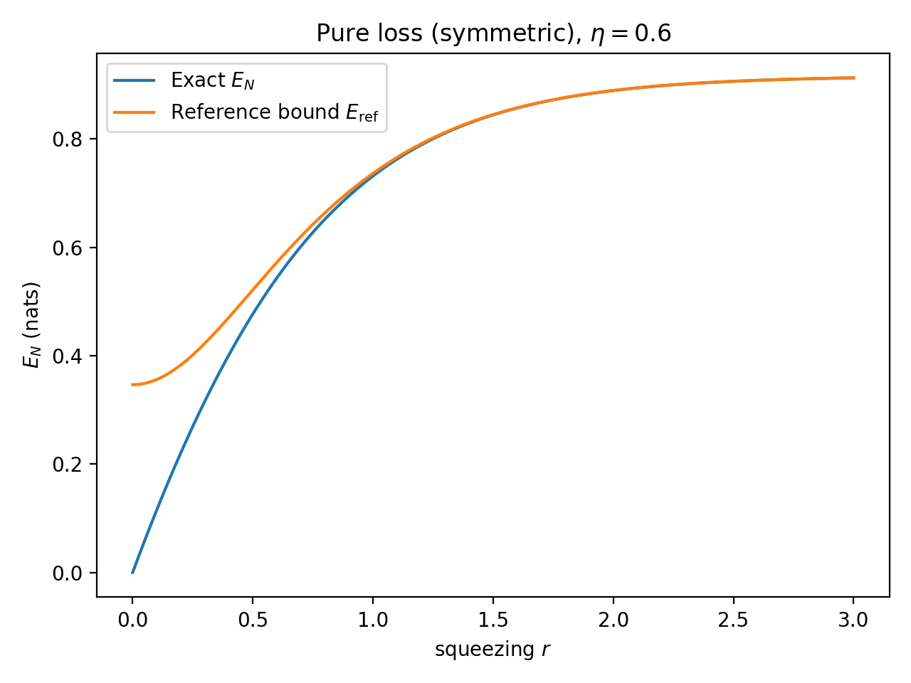

The strap issue widened into a carrying-system problem involving comfort, adjustability, access, snagging, and manufacturing.
Projects
Four project cases, spaced to read as separate arguments
This page is the represent-and-connect core of the portfolio. The first three cases are the primary ESC102 course design activities: Praxis I, CIV102, and Praxis II. I keep the Gaussian project as an additional comparison case because it shows the same design position under a more abstract pressure. Each section now uses longer discussion beats, clearer figure placement, and direct evidence links so the reader can tell what changed, what evidence mattered, and where my contribution sits.
Project 01
Praxis I: Backpack Strap Design
The team held three concept directions open until explicit criteria could compare them instead of letting the cleanest idea win by default.
The annotated lotus reconstruction, evidence sheet, and MATLAB model show where divergence expanded and where comparison finally became disciplined.
This case shows both the value of structured comparison and the danger of letting a model look more complete than the underlying evidence.
Context
What the team had to clarify before any concept could be judged
The first block keeps the framing and the first evidence links together so the reader can see why the project widened before it converged.
Summary
The project started as a redesign problem around excess backpack straps catching on external objects. The team first diverged across several possible directions, then stabilized around three concept paths: elastic control, inside-bag adjustment, and shoulder-side adjustment. The more useful framing was broader than the original complaint. The loose strap was only one symptom of a carrying-system problem that also involved comfort, access, adjustability, snagging, and manufacturability.
Convergence started only once the team had explicit criteria and a structure for comparison. My contribution was the simplified lumbar-deviation model that converted prototype parameters into legible metrics, but the larger design move was collective: the team stopped asking which idea looked neatest and started asking which direction handled load distance, comfort, access, and obstruction most defensibly.
Decision
What decision structure changed the project
The project improved once the strap problem was widened into a carrying-system problem and the comparison model was made answer to explicit criteria. This is the first case where my preference for structure helps the team, but also shows its limits.
The loose strap was only one visible symptom of a larger carrying problem
My first instinct was to hunt for a neat fastening mechanism. The project got stronger once the team treated the issue as a system of consequences involving snagging, posture, load path, ease of adjustment, and manufacturability. That wider frame is what justified keeping three concept directions open long enough to compare them meaningfully instead of converging on the cleanest-looking fix.
The simulation helped because it disciplined comparison, not because it was exact
My contribution was to translate each concept into comparable parameters such as excess strap, load distance, and pressure, then tie those outputs back to explicit criteria. That made the model useful, but it also exposed a recurring risk in my own process: when build evidence is thin, representation can start looking more certain than the assumptions behind it. The project would have been stronger still if the early model had been paired with faster physical checks.
Evidence
Annotated visuals and artifacts that made the comparison readable
The evidence block combines a reconstructed team diagram with the submitted artifact and the model excerpt so the reader can see both divergence and later filtering.

This portfolio diagram is useful because it shows what a plain blossom would hide: the point where divergence was still generating ideas but no longer helping the team decide between them.
Restructured/redrawn from paper to allow for ease of visibility but idea is sitll the same.
{kind=link}

This artifact shows the jump from an unresolved requirement concern to a concrete simulation interface. It mattered because it converted a team uncertainty into something that could be explored rather than argued abstractly.

This page from the submitted document shows the prototype-specific metrics, thresholds, and research basis that turned the simulation from an internal tool into part of the final argument.
% PROTOTYPES: % - Elastic Strap % - Inside-Bag Adjustment % - Shoulder-Side Adjustment loadDistance = baseDistance + excessStrap * 0.5; M0 = totalWeight * 9.81 * (loadDistance / 100); M_dist = M0 * (1 - x / spineLength).^2.2;
The excerpt is useful because it shows how concept directions became comparable parameters. This was the point where the project shifted from a list of ideas to a model-backed comparison.
Reflection
What this case says about my contribution and design habits
The closing block keeps my role, the supporting CTMF trail, and the design lesson in one place so the project ends with a clearer account of responsibility.
My role
My contribution
- I built the simulation-based comparison tool and helped define the measurable criteria used to compare concepts.
- I used the model outputs to support comparison between concept directions instead of treating the simulation as a final answer on its own.
Team credit
- Concept generation and design direction were shared team work.
- The final interpretation of prototype directions and requirements was collaborative, not individual.
Linked concepts
These handbook entries explain how the concept set, the judging criteria, and the low-resource evidence worked together.
Reflection: I rely on models quickly when build evidence is incomplete. In this project that was useful because it created a disciplined comparison. It was also a warning sign, because a model can look more certain than the evidence behind its assumptions. Next time I would pair the early simulation with faster physical checks rather than letting representation carry the whole burden.
Project 02
CIV102 Bridge
The bridge begins as a load-and-material problem, but it only becomes design work when those requirements are attached to geometry and fabrication.
The decisive move was treating failure modes, drawings, and assembly logic as one reasoning chain instead of separate deliverables.
The decision-stack diagram, drawings, calculations, and code make that chain visible rather than leaving it implied.
This is the clearest example of my tendency to trust clean quantitative structure until constructability pushes back.
Context
Why the bridge had to be read as both analysis and build logic
The opening block states the technical problem, then keeps the report, drawings, calculations, and code close enough that the bridge cannot be mistaken for an abstract optimum.
Summary
The CIV102 bridge required a design that could survive a specified moving train load under tight material and fabrication constraints. The team did not move straight from equations to one final geometry. The project diverged through possible section layouts, reinforcement choices, and assembly logic, then narrowed those options through moving-load analysis, likely failure modes, and the buildability visible in the drawings.
What makes the project important in this portfolio is not that it contains many calculations. It is that the calculations had to be tied to buildable geometry. The final bridge could not be treated as an abstract optimum. It had to be drawn, cut, glued, and assembled with the same logic that the analysis assumed.
Decision
What decision structure stopped the bridge from collapsing into one metric
The bridge only became convincing once the calculations started answering to failure modes, geometry, and build logic at the same time. This is where my attraction to clean quantitative structure was most obviously incomplete.
The bridge stopped being a neat optimization problem once failure modes and build logic entered
Early on, the project invited a familiar habit: treating the bridge as a problem of material efficiency with a clean numerical objective. The work got stronger once the design was represented instead as interacting failure modes under a moving load, with drawings and assembly decisions counted as part of the same reasoning chain. That shift made the calculations useful because they were answering to specific regions, connections, and fabrication consequences.
Constructability needed to influence the geometry before convergence, not after it
The hardest lesson here was that drawings, glue strategy, fit tolerances, and assembly quality could not stay downstream of the math. If those build conditions are only used to explain the bridge afterward, then the cleanest section on paper gets too much authority. This case made visible that verification had to include the way the bridge would actually be cut, glued, and assembled, not just the way it looked inside the analytical model.
Evidence
The visual chain from requirements to fabrication
The evidence is strongest when the reader can move from an annotated design stack into the drawings, the calculations, and finally the envelope code that tested worst-case loading.

This portfolio diagram matters because it shows where the project stopped being a neat optimization exercise. The bridge only became persuasive once the stack stayed intact from requirements through glue strategy.
{kind=link}

The drawings matter because they translate section assumptions into build instructions. In this project, representation was not cosmetic documentation; it was the bridge between analysis and fabrication.

This calculation page is useful because it breaks the design into specific modes of failure rather than a single pass-fail number. That decomposition changed where the team looked for weakness.
for idx, p0 in enumerate(start_positions):
load_positions = p0 + offsets
V = compute_SFD(load_positions, loads_magnitudes)
M = compute_BMD_from_SFD(V)
envelope_M_pos = np.maximum(envelope_M_pos, M)
The computational envelope prevented the design from being judged on a single train position. It mattered because critical sections and splice decisions depend on the worst case, not the easiest case to sketch by hand.
Reflection
What this bridge taught me about constructability and credit
The closing block shows where my analytical contribution sat inside the team output and why this case changed how I think about verification.
My role
My contribution
- I contributed analytical modeling, section-property work, load-envelope reasoning, and failure-mode interpretation through code and calculations.
- I helped connect the analytical checks to the regions and failure modes that mattered for the final bridge logic.
Team credit
- Bridge geometry selection, report production, and fabrication were shared team work.
- The drawings and final bridge were collective outputs and should be read that way.
Linked concepts
These handbook entries make the bridge decisions easier to read by tying the requirements, checks, and drawings together.
Reflection: this project showed me that I can mistake analytic neatness for design completeness. I had good tools for capacity and failure analysis, but the bridge still depended on how clearly those assumptions were carried into fabrication. The design habit I most need to correct is converging around the cleanest quantitative objective before constructability has been made equally explicit.
Project 03
Praxis II: Daycare Wristband Workflow
The visible artifact was the wristband, but the real design space was the whole morning check-in workflow and the pressure around departure.
The project improved once the team converged on a parent-led two-station system instead of treating the device as a standalone object.
The annotated lotus, prototype view, solution summary, and validation atlas show how the project moved from open concept work to a buildable workflow proposal.
This case is the clearest correction to my earlier design habit: divergence helped the team see a workable opportunity before convergence narrowed it.
Context
How the project widened from a device idea to a workflow question
The first block keeps the scenario framing and the evaluation evidence together so the reader sees the project as an operational redesign rather than a standalone wristband concept.
Summary
Praxis II centered on a daycare field-trip wristband process. The visible artifact was the wristband, but the real design problem was a morning workflow: one staff member had to manage attendance, supervision, forms, and wristband application under departure pressure. The team diverged across parent-applied, one-machine, and two-machine directions instead of assuming the right answer was obvious from the start. The final direction was a parent-led system with two application stations and a loading-aid device that kept band orientation clearer while preventing one check-in line from carrying the whole burden.
What made that direction persuasive was not only that it looked cleaner as a device. It was easier to follow as a workflow. Parents could apply bands in parallel, staff could stay in the wider verification process instead of doing every band by hand, and the prototype features such as the loading funnel, slide path, and wrist-stabilizing divot all supported that larger system logic. The validation results then acted as support for the chosen direction rather than as the whole story of the project.
Decision
What decision structure made the concepts comparable
The project got clearer once the opportunity was treated as morning workflow risk rather than a single product idea. That shift made it easier to compare where each concept moved work, who handled the band, and how the check-in line would actually flow.
The real problem was a crowded arrival routine, not only the wristband itself
The requirement table helped widen the project from "make wristbands easier" to "reduce operational burden while keeping safety, intuitiveness, and setup time acceptable." That mattered because a concept could look elegant as an object but still create a bad check-in process once parents, classroom verification, and fallback staff work were included.
The final direction worked because the workflow was easier to follow
The team converged on a parent-led system with two application stations and a loading aid because it reduced the single-line bottleneck without pretending staff could disappear from the process. The better move was not "more machinery." It was a clearer split of tasks: parents apply bands in parallel while staff stay available for attendance, verification, and correction when needed.
Evidence
The visual trail from concept blossom to final workflow direction
The evidence block starts with the concept reconstruction, then moves into the prototype and the chosen parent-led system before ending with the validation results that supported it.

This diagram answers the exact criticism that a plain blossom would deserve. It shows how the project differed from Praxis I: the branches are already tied to workflow pressure and operational metrics instead of just naming more ideas.
Restructured/redrawn from paper to allow for ease of visibility but idea is sitll the same.
{kind=link}

The project did not end as an abstract workflow diagram. It converged into a physical loading-aid direction with a clear tray path, loading space, and wristband handling logic that had to make sense as a real object.
{kind=link}

This figure keeps the chosen direction easy to follow. It shows the design as a workflow, not just as a device: parents apply bands in parallel, while staff remain in the larger check-in loop.

The validation results matter because they support the final workflow choice without pretending the choice came from one perfect number. They show where the chosen system stays useful under changing assumptions.
Reflection
How this case separates my modeling role from the team design work
The final block keeps the individual modeling contribution, the shared team framing, and the design lesson together so the project closes on accountability rather than raw output volume.
My role
My contribution
- I helped build the comparison structure that made the workflow options legible and produced the supporting validation results for the final direction.
- I used the model and the visuals to keep the two-station parent-led system tied to explicit criteria instead of intuition alone.
Team credit
- Stakeholder framing, concept generation, and the larger design rationale were shared team work.
- The prototype direction and the final parent-led workflow should be read as collective team work supported by my modeling and evidence interpretation.
Linked concepts
These entries explain how the criteria, workflow prototype, and validation results made the Praxis II comparison legible.
Reflection: this project corrected a habit I could already see in Praxis I. The useful move was not searching for one clever object right away. It was protecting divergence long enough to see that a parent-led two-station system was a real opportunity, then converging on the direction that made the workflow easiest to follow.
Project 04
Gaussian Entanglement Project
The design problem here is a method problem: how to preserve enough structure to make a meaningful entanglement claim readable.
The key move was replacing repeated numerical evaluation with a reduced analytical claim that could still be benchmarked honestly.
The argument map, plots, and code excerpt show how the project moved from reduction to comparison and then to a scoped conclusion.
This is where my attraction to abstraction is strongest, and where I have to work hardest to keep exclusions visible.
Context
Why this analytical project still belongs in a design portfolio
The first block explains the method-design problem, then keeps the note and benchmark code close enough that the abstraction can be judged as a design move rather than a black box.
Summary
This project studies when entanglement survives after a two-mode squeezed vacuum state passes through symmetric phase-insensitive Gaussian channels. The central design move was to change the representation of the problem so the partially transposed eigenvalue condition could be treated as an explicit inequality in the channel parameters. Even as an individual research project, the work still had a divergence and convergence structure: I had to open several ways of framing the analytical claim before narrowing to the one that remained benchmarkable.
In portfolio terms, this is not a conventional product-design artifact. It is a method design problem. The challenge was to decide what structure to preserve, how to state the analytical claim clearly, and how to use figures and exact comparisons to revise the cleaner formulation before trusting it. That makes it a useful counterpoint to the more physical design projects in the portfolio.
Decision
What decision structure kept the abstraction honest
The work only gained leverage once the analytical claim was explicit, the supporting argument was inspectable, and the figures were used to revise the claim rather than decorate it. This case keeps the same structure as the earlier projects, but the design pressure is mostly on reasoning rather than fabrication.
The useful move was turning repeated computation into a readable analytical claim
The first version of the problem could have remained a numerical routine around the full symplectic spectrum. The stronger move was to ask whether symmetry could reduce the condition to something explicit in the channel parameters. That shift mattered for the same reason the earlier project reframings mattered: it changed what kind of decision the evidence could support.
The cleaner threshold only earned authority when the figures changed the argument
After the reduced condition was in place, the plots became decision tools rather than decorations. I used them to perceive where the bound separated from exact behavior, interpret what caused the gap, assess whether the shortcut was still acceptable, and act by tightening the claim. The real discipline here was keeping the claim, grounds, and warrant visible together so tractability did not get mistaken for completeness.
Evidence
The reasoning map, plots, and code that support the claim
The evidence starts with an argument map because the project is easy to flatten into pure mathematics. The visual keeps the claim, benchmarks, and scoped conclusion in the same frame.

This diagram makes the project legible as a design argument rather than a bundle of equations. It shows that the plots matter because they pressure the claim and force the conclusion to narrow where needed.
{kind=link}

This figure matters because it shows whether the cleaner representation preserves the relevant trend or merely produces a prettier formula. The decision was not to trust the bound blindly, but to compare it against exact computation.

The parameter-space scan is useful because it makes approximation error a visible landscape instead of a single hand-picked example. That widened the problem enough to judge where the reduced method was genuinely informative.
def rc_thermal(eta, Nth):
denom = 1.0 - (1.0 - eta) * (2.0 * Nth + 1.0)
if denom <= 0:
return np.inf
ratio = eta / denom
return 0.5 * np.log(ratio)
This code fragment captures the point of the project: turning an abstract condition into an explicit threshold that can be read directly at the parameter level.
Reflection
Where this case is strongest and where it still needs discipline
The closing block keeps the individual contribution, the supporting concepts, and the warning about abstraction in one place so the project does not pretend the reduction solved everything.
My role
My contribution
- I carried out the analytic framing, coding, parameter sweeps, figure generation, and draft write-up.
- Any future extension toward publication would require a clearer collaboration structure, but the work presented here is mine.
Credit note
- This is an individual research project.
Linked concepts
These entries explain the analytical claim, the argument structure, and the figure-reading loop that hold the project together.
Reflection: this project is where my preference for abstraction is most visible. That preference is productive when it creates a clearer decision surface. It becomes dangerous if the reduced setting starts being treated as the whole problem rather than a disciplined slice of it.